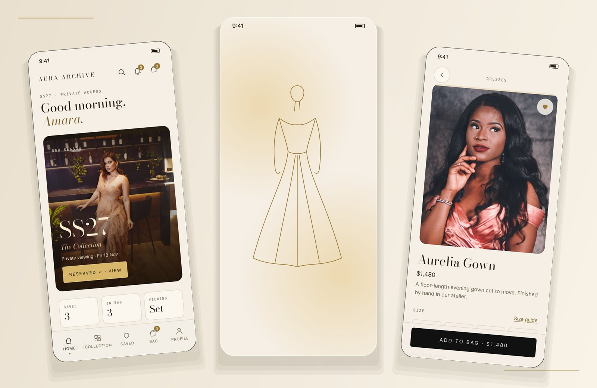
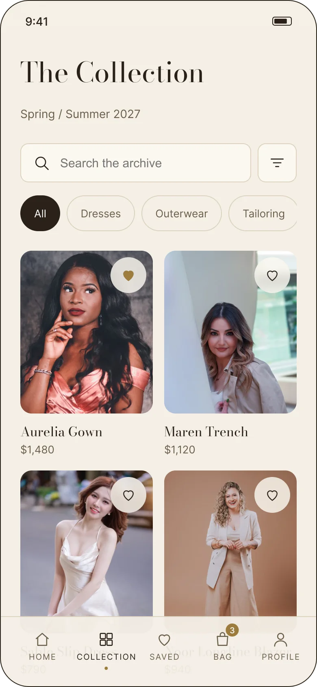
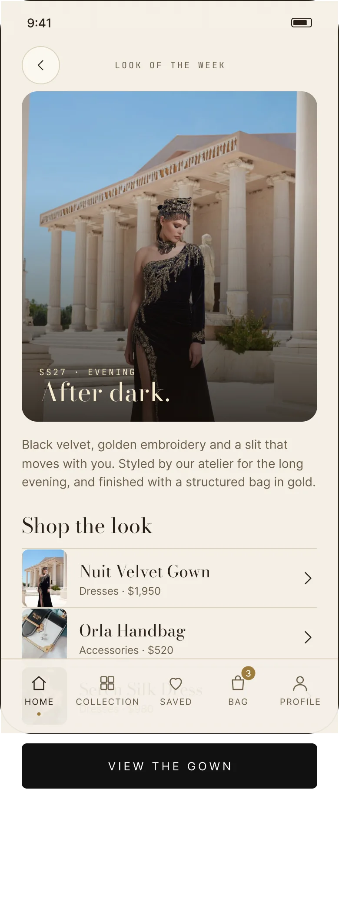
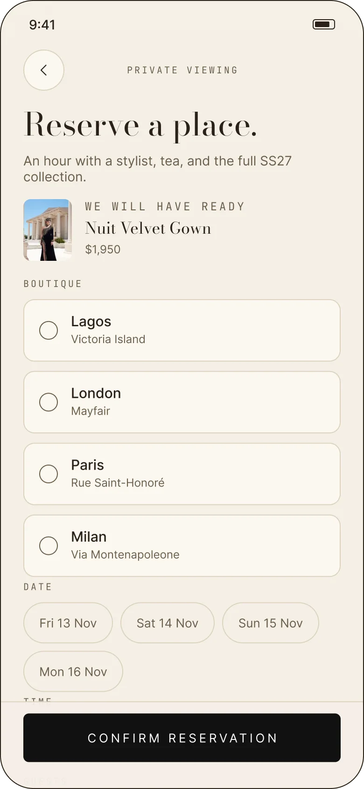
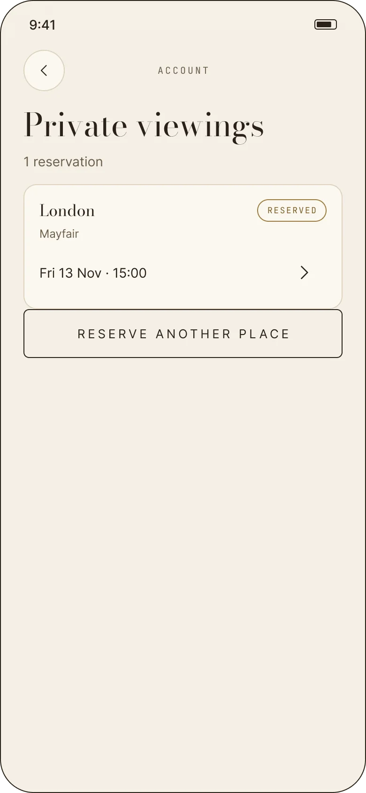
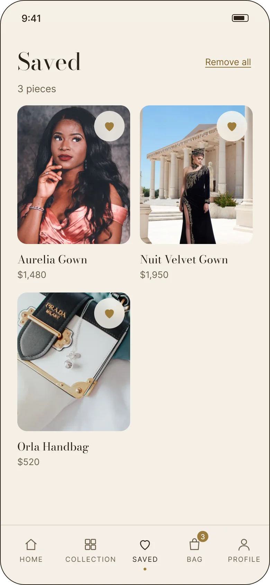
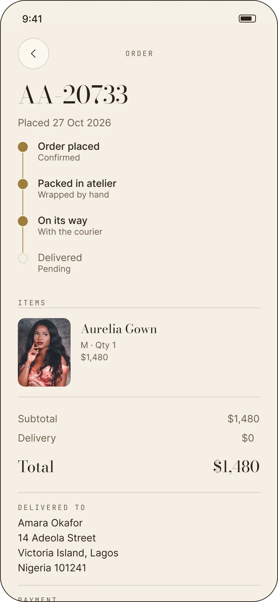

A house with no shopfront.
Aura Archive is a self-initiated concept for a luxury fashion house that lives entirely on the phone. One quiet door leads to the SS27 collection, an editorial look of the week, a three-step checkout and a private appointment with a stylist.
- Role
- Sole designer — UX & UI
- Scope
- 30 screens · five flows
- Timeline
- 2–4 weeks
- Status
- Self-initiated concept
Mobile 390 × 844 Season SS27 Designed in Figma Prototype Clickable

01 — The premise
Luxury is a sequence, not a grid.
Most fashion apps open onto a wall of products. Aura Archive opens onto a door. The first screen is a season cover; the next asks who you are and what you wear; only then does the collection appear. The order is the point — it makes browsing feel like being expected rather than advertised to.
The app has five tabs — Home, Collection, Saved, Bag and Profile — and one continuous thread between them. A piece seen in an editorial can be saved, sized, bought and followed into a private viewing without the interface changing its voice.
- 01The doorA season cover, sign-in, a guest route and a two-question taste onboarding that shapes the home.
- 02The roomA season-led home, a filterable collection, and product pages that keep the photography in charge.
- 03The serviceThree-step checkout, order tracking, private viewings and a concierge who stays in the same app.
02 — The collection
A catalogue small enough to read.
SS27 holds nine pieces. That is a deliberate constraint: a tight season lets the photography, the copy and the service carry the brand instead of an endless grid. The collection page is the one screen designed to be scanned — search, four categories, then a flat edit of every piece with its price.
The product page slows down again. A single image takes most of the screen, followed by the price, a short description, the size row and the size guide. Details, care, delivery and returns sit in accordions beneath, so the answer to a practical question is never more than one tap away.


03 — The editorial layer
The look is the product.
Look of the week is a full-bleed story rather than a banner: “After dark.” — black velvet, golden embroidery and a slit that moves with you, styled by the atelier and finished with a structured bag in gold. The pieces in the story are shoppable underneath, so the editorial never becomes a dead end.
The edits — The Evening Edit, Resort Tailoring and Gold Hour — give the same catalogue a second entrance. They are curated by mood rather than category, which is closer to how people shop for an occasion.


The service layer
An hour with a stylist, tea, and the season.
The private viewing is what separates Aura Archive from a shop. Choose a boutique in Lagos, London, Paris or Milan, a date, a time and a guest, then leave a note for the stylist. The app holds the reservation, the reschedule and the cancellation in the same quiet voice — and the concierge stays beside it.
See the appointment flow

The other rooms
Entry, care and after-sale · 08 screens






04 — The system
Warm paper, gold leaf, one serif.
The palette is pulled from the photography: cocoa for type, a warm taupe for secondary copy, cream for surfaces and a single gold for the season. Gold is used sparingly — a rule, a price, a confirmation — so it keeps feeling like foil rather than a theme colour.
Bodoni Moda carries the editorial voice. Inter does the reading. JetBrains Mono labels the parts that need to feel like a receipt: prices, sizes, order numbers and delivery windows.
After dark.
A floor-length evening gown cut to move. Finished by hand in our atelier.
SS27 · PRIVATE ACCESS · 3–5 WORKING DAYS
Thirty screens, one archive.
The case study follows the door, the collection, the transaction and the appointment — and the questions I would test next.